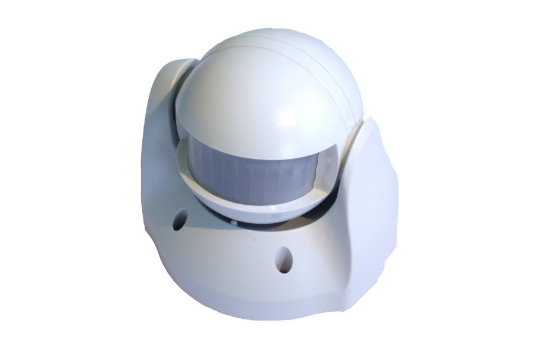
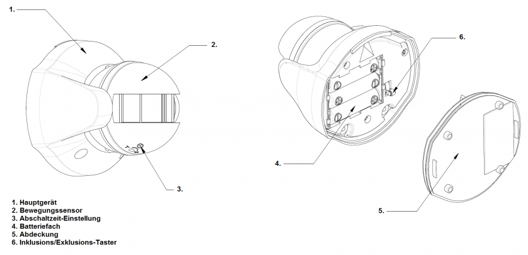
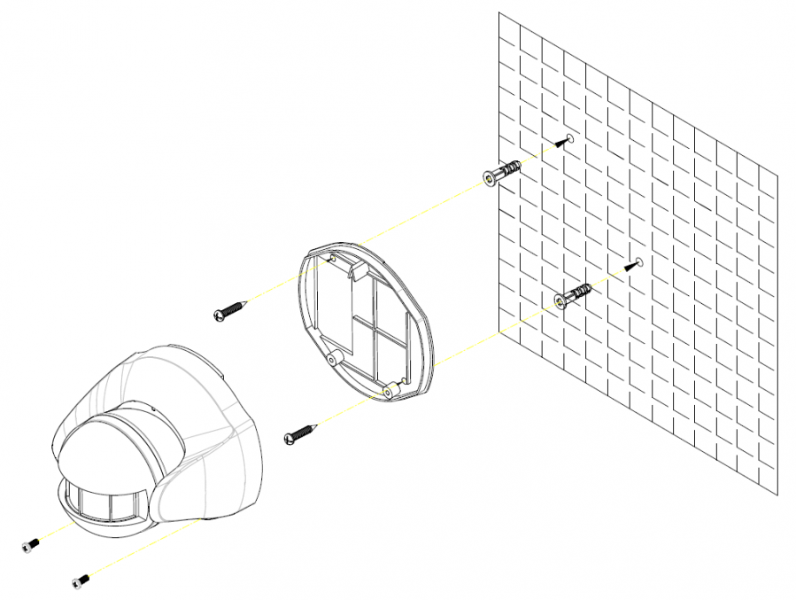
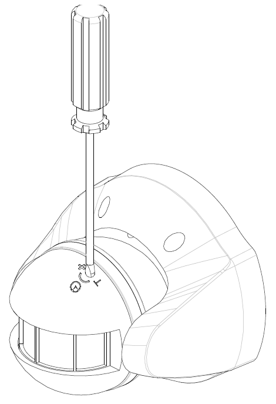

EVR_SP103
Firmware Version : 1.0 |
 |
KurzinfoSDieses Gerät ist ein Z-Wave Sensor. Drücken Sie zum Inkludieren oder Exkludieren des Gerätes einmal die Z-Wave Taste hinter der Batterieabdeckung. Das Drücken der Z-Wave Taste oder das Öffnen des Bewegungssensors weckt das Gerät auf und hält es für 10 Minuten im Wachzustand. Weitergehende Informationen finden sich in den jeweiligen Abschnitten dieses Handbuches. |
Produktbeschreibung
Installationsanleitung
1. Öffnen sie die Batterieabdeckung an der Rückseite indem Sie die Schrauben entfernen.

2. Legen Sie die 3 * AA Batterien in das Batteriefach.

3. Zur Befestigung an einer Wand, montieren Sie die Batterieabdeckung und gleichzeitig Halterung mittels der Schrauben an der Wand.
Es wird empfohlen, den Sensor in einer Höhe von 1,8 bis 2,0 m in einer Raumecke zu installieren. In dieser Höhe hat der Sensor in Abhängigkeit vom Einstellungswinkel ein Beobachtungsfeld von 6-12 m. An dieser Befestigungsposition hat der fächerförmige Sensor mit 100 Grad seinen maximalen Beobachtungsbereich und bietet maximalen Schutz. Vor dem Befestigen sollten Sie folgende Punkte berücksichtigen:
Der Sensor sollte nicht direkt vor einem Fenster platziert werden und nicht direktem Sonnenlicht ausgesetz werden. Bewegungsmelder sollten nicht in Bereichen mit Grünpflanzen und anderen beweglichen Gegenständen eingesetzt werden.
Der Sensor darf nicht direkt neben oder über Hitzequellen wie Kaminen, Heizungen und Boilern platziert werden.
Platzieren Sie den Sensor so, dass der wahrscheinliche Weg eines Eindringlings möglichst gut im überwachten Bereich liegt.

4. An dem Sensor kann eine elektrische Last wie z.B. eine Lampe angeschlossen werden. Diese Last wird bei Auslösen des Bewegungssensors eingeschaltet und mit einer einstellbaren Verzögerung wieder ausgeschaltet. Stellen Sie dazu den Regler wie im Bild erkennbar auf die gewünschte Abschaltverzögerung. Diese kann zwischen 5 Sekunden und 12 Minuten eingestellt werden.
Verhalten des Gerätes im Z-Wave Netz
I Im Auslieferungszustand ist das Gerät mit keinem Z-Wave-Netz verbunden. Damit es mit anderen Z-Wave Geräten kommunizieren kann, muss es in ein bestehendes Z-Wave Netz eingebunden werden. Dieser Prozess wird bei Z-Wave Inklusion genannt. Geräte können Netzwerke auch wieder verlassen. Dieser Prozess heißt bei Z-Wave Exklusion. Beide Prozesse werden von einem Controller gestartet, der dazu in einen Inklusion- bzw. Exklusion-Modus geschaltet werden muss. Das Handbuch des Controllers enthält Informationen, wie er in diese Modi zu schalten ist. Erst wenn der Controller des Z-Wave Netzes im Inclusion-Modus ist, können Geräte hinzugefügt werden. Das Verlassen des Netzes durch Exklusion führt zum Rücksetzen dieses Gerätes in den Auslieferungszustand.
Bringen Sie den Controller in den Inklusion-/Exklusion-Modus. Drücken Sie zum Bestätigen des Inklusion-/ Exklusion-Prozesses kurz den Z-Wave Taster hinter der Batterieabdeckung des Gerätes.
Bedienung des Gerätes
Der Bewegungssensor wurde entwickelt, um Bewegungen innerhalb eines überwachten Bereiches mittels Änderungen im infraroten Bereich des Lichts wahrzunehmen. Er kann Personen wahrnehmen, die sich innerhalb des Überwachungsbereiches bewegen, und löst per Funksignal einen Alarm aus.
An der Rückseite des Gerätes befindet sich ein Taster für die Inklusion, Exklusion und Assoziation von Z-Wave Geräten. Bringen Sie dazu Ihren Z-Wave Controller in den entsprechenden Zustand und drücken den Taster zum Bestätigen. Die Zusatndsänderung beim Öffnen bzw. Schließen des Tasters weckt das Gerät auf, und hält es für 10 Minuten wach, um die Konfiguration zu ermöglichen.
1. Ist der Taster im geöffneten Zustand, geht das Gerät in den Test-Zustand. Eine Bewegung löst dabei den Sensor und eine rote Kontroll-LED aus. Leuchtet die LED, arbeitet das Gerät einwandfrei.
Beachte: Beim Einlegen der Batterien leuchtet die LED für circa eine Minute solange sich der Sensor einstellt.
2. Der Taster ist bei geschlossenem Gehäuse ebenfalls geschlossen und das Gerät geht in den aktivierten Zustand. Wenn eine Bewegung im Beobachtungsbereich wahrgenommen wird, schaltet das Gerät die angeschlossene elektrische Last. Nach der eingestellten Verzögerung schaltet das Gerät die Last wieder aus. Im normalen Zustand mit geschlossenem Taster leuchtet die Kontroll-LED beim auslösen durch Bewegung nicht auf, um Energie zu sparen. Bei niedrigem Batteriestand leuchtet die LED auf.
3. Drückt man den Taster für mindestens 5 Sekunden und lässt ihn danach wieder los, wird ein Alarm ausgelöst, und die angeschlossene Lampe wird für 10 Sekunden aktiviert.
Kommunikation mit einem batteriebetriebenen Gerät
W Das Gerät ist batteriegespeist und damit in der Regel in einem Tiefschlafmodus um Strom zu sparen. Im Tiefschlafmodus kann das Gerät keine Funksignale empfangen. Daher wird ein (statischer) Controller benötigt, der netzgespeist und damit immer funkaktiv ist. Dieser Controller - zum Beispiel ein IP-Gateway - verwaltet eine Nachrichten-Mailbox für dieses batteriegespeiste Gerät, in dem Nachrichten an dieses Gerät zwischengespeichert werden. Ohne einen solchen statischen Controller wird die Nutzung dieses batteriebetriebenen Gerätes sehr schnell zur Entladung der Batterie führen oder die Nutzung ist komplett unmöglich.
Dieses Gerät weckt regelmäßig auf, meldet dies durch Aussenden einer sogenannten Wakeup-Notifikation und leert dann seine Mailbox im statischen Controller. Dafür muss bei der Inclusion die Node-ID des Controllers und ein Aufweckinterval definiert werden. Erfolgt die Inklusion durch einen statischen Controller wie zum Beispiel ein IP-Gateway, wird dieser Controller diese Konfiguration automatisch erledigen und in der Regel eine Nutzerschnittstelle anbieten, um das Aufweckinterval den Nutzerbedürfnissen anzupassen. Das Aufweckinterval ist ein Kompromiss zwischen maximaler Batterielaufzeit und minimaler Reaktionszeit des batteriegespeisten Gerätes.
Durch Drücken der In-/Exklusiontaste hinter dem Batteriefach oder das Aktivieren des Bewegungssensors wird das Gerät aufgeweckt und kann Netzwerkbefehle erhalten.
Es ist möglich die Gerätenummer 255 als Zielgerät für die Wakeup-Notifikation anzugeben. In diesem Falle wird die Nachricht als Broadcast an alle Geräte mit direkter Funkverbindung gesendet. Dem Vorteil der sofortigen Benachrichtigung steht als Nachteil gegenüber, das das Gerät gegebenenfalls mehr Zeit im aktiven Modus und damit mehr Batterieladekapazität verbraucht.
Node Information Frame
NIF Der Node Information Frame ist die Visitenkarte eines Z-Wave Gerätes. Es ist ein spezielles Datenpaket, in dem der Gerätetyp sowie die Funktionen des Gerätes bekanntgemacht werden. Inklusion und Exklusion eines Gerätes wird von diesem mit einem Node Information Frame beantwortet. Zusätzlich kann der Node Information Frame für bestimmte Konfigurationsprozesse des Z-Wave Netzes - zum Beispiel das Setzen von Assoziationen - benötigt werden.
Das Drücken der In-/Exklusionstaste hinter dem Batteriefach oder das Aktivieren des Bewegungssensors führt zum Senden eines Node Information Frame.
Assoziationen - wie werden andere Geräte gesteuert?
A Z-Wave Geräte können andere Geräte direkt steuern. Diese direkte Steuerung heißt in Z-Wave Assoziation. In den steuernden Geräten muss dazu die Geräte-ID des zu steuernden Gerätes hinterlegt werden. Dies erfolgt in sogenannten Assoziationsgruppen. Eine Assoziationsgruppe ist immer an ein Ereignis im steuernden Gerät gebunden (Tastendruck oder Auslösen eines Sensors). Bei Eintritt dieses Ereignisses wird an alle in einer Assoziationsgruppe hinterlegten Geräte ein Steuerkommando gesendet.
Assoziationsgruppen:
| 1 | Sensor löst aus (max. Anzahl Geräte: 5) |
Konfigurationseinstellungen
Z-Wave Produkte können direkt nach der Inklusion im Netz verwendet werden. Durch Konfigurationseinstellungen kann das Verhalten des Gerätes jedoch noch besser an die Anforderungen der Anwendung angepasst und zusätzliche Funktionen aktiviert werden.
WICHTIG: Manche Steuerungen erlauben nur die Konfiguration von vorzeichenbehafteten Werten zwischen -128 und 127. Um erforderliche Werte zwischen 128 und 255 zu programmieren, muss der gewünschte Wert minus 256 eingegeben werden. Beispiel: um einen Parameter auf einen Wert von 200 zu setzen, müsste der Wert 200-256 = -56 eingegeben werden, wenn nur positive Werte bis 128 akzeptiert werden. Bei Werten von 2 Byte Länge wird die gleiche Logik angewandt: Werte über 32768 werden als negative Werte angegeben
| Wert | Beschreibung |
|---|---|
| 0 | Ausschalten (Voreingestellt) |
| 1 — 96 | Einschalten |
| 97 — 239 | Einschalten auf den letzten Dimmerwert |
| Wert | Beschreibung |
|---|---|
| 0 | Ausschalten |
| 1 — 255 | Einschalten (Voreingestellt 1) |
Technische Daten
| Batterietyp | 3 * AA |
| Explorer Frames | Nein |
| SDK | 4.22 |
| Geräteart | Slave with routing capabilities |
| Allgemeiner Z-Wave-Gerätetyp | Binary Sensor |
| Spezieller Z-Wave-Gerätetyp | Routing Binary Sensor |
| Router | Nein |
| FLiRS | Nein |
| Firmware Version | 1.0 |